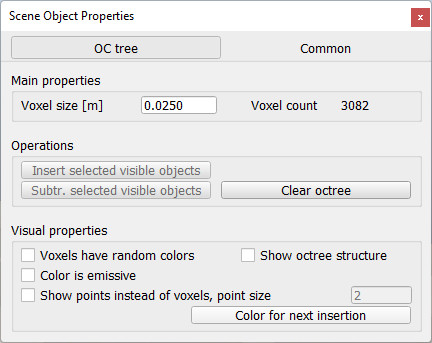

|
OC tree dialog
The OC tree dialog is part of the scene object dialog, which is located at [Tools > Scene object properties]. You can also open the dialog with a double-click on an object icon in the scene hierarchy, or with a click on its toolbar button:
[Scene object properties toolbar button]
In the scene object dialog, click the OC tree button to display the OC tree dialog (the OC tree button only appears if the last selection is an OC tree). The dialog displays the settings and parameters of the last selected OC tree:

[OC tree dialog]
Voxel size: the size of the OC tree voxels. The smaller the size, the more memory will be used for the OC tree data structure. Refer also to ocTree.voxelSize.
Insert selected visible objects: allows you to insert voxels based on the selected, visible objects. Only dummies, shapes, OC trees and point clouds are taken into account. Select all objects you want to insert, then select the target OC tree object last. Refer also to ocTree:addFromObjects and ocTree:addVoxels.
Subtract selected visible objects: allows you to remove voxels based on the selected, visible objects. Only dummies, shapes, OC trees and point clouds are taken into account. Select all objects you want to insert, then select the target OC tree object last. Refer also to ocTree:subtractFromObjects and ocTree:subtractVoxels.
Clear OC tree: removes all the voxels from the OC tree. Refer also to ocTree:clear.
Voxels have random colors: each voxel will have a random color. Refer also to ocTree.randomColors.
Show OC tree structure: shows the OC tree data structure, mainly for debugging purposes.
Color is emissive: voxels will be shown in emissive colors.
Show points instead of voxels: for OC trees containing a large amount of voxels, display can be quite slow. In that case you have the possibility to display pixel voxels, instead of cubic voxels. Refer also to ocTree.showPoints.
Color for next insertion: allows you to select a new color, which will be used for new voxel insertions.
|